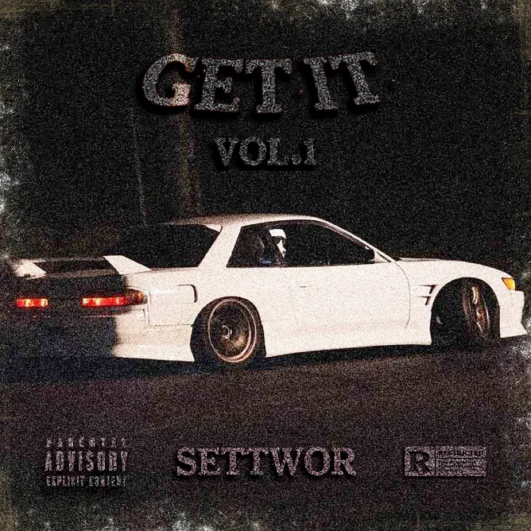

Digital Stream awards
CDRA
All-time streams, all platforms combined. Every count checked by hand.
- Awards
- 5
- Top award
- 2,500,000
- Latest
- October 2026
All awards
GOT ME UP 2 by SETTWOR
-

Single 250,000 all-time streams · Bronze May 1, 2025 · 412 days after release — open the award page for 250,000 streams - Single 500,000 all-time streams · Silver July 22, 2025 · 494 days after release — open the award page for 500,000 streams
- Single 1,000,000 all-time streams · Gold February 22, 2026 · 709 days after release — open the award page for 1,000,000 streams
GET IT, Vol.1 by SETTWOR
SETTWOR

Questions and answers
What is CDRA?
CDRA stands for Certified Digital Release Award. It is a set of stream-milestone awards. It is its own award, not an official certification by any record-industry body.
What are the award levels?
Level names and stream numbers are set separately for a single, an album and an artist. The level names belong to CDRA.
Open the award standardsHow are streams counted?
All platforms combined: the number is all-time streams across every platform together.
How are streams verified?
SETTWOR checks every stream count by hand, using his own system for fair checking and verification of streams. CDRA awards are not an official certification.
What do the awards cover?
The 250,000, 500,000 and 1,000,000 awards are for the track “GOT ME UP 2” from the album GET IT, Vol.1, released on March 15, 2024. The 1,000,000 award is for the album GET IT, Vol.1. The 2,500,000 award is for SETTWOR as an artist.
When were the awards reached?
250,000 for the track on May 1, 2025; 500,000 for the track on July 22, 2025; 1,000,000 for the track on February 22, 2026; 1,000,000 for the album in Winter 2026; 2,500,000 for the artist in October 2026.
Where can I listen to the track?
Open any “GOT ME UP 2” award page and look under More information: there are links to Spotify, Apple Music, YouTube Music and YouTube.
More about SETTWOR
SETTWOR is a music producer specializing in phonk, hip-hop/rap, and dance/electronic music. Originally from Kryvyi Rih, Ukraine, he relocated to Poland in 2022 and manages a well-known 8D music channel.
In 2018 he began studying music and, having gained some knowledge, released his first track “Light Wave” in 2021.
SETTWOR was born on February 8, 2007, in Kryvyi Rih, Ukraine. In 2020, Daniil took the pseudonym SETTWOR and created a YouTube channel of the same name for his work and future music. On May 8, 2022, the artist’s first track in the phonk genre - Lunatic - was released.